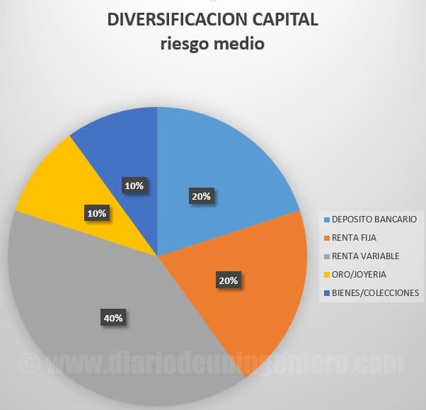
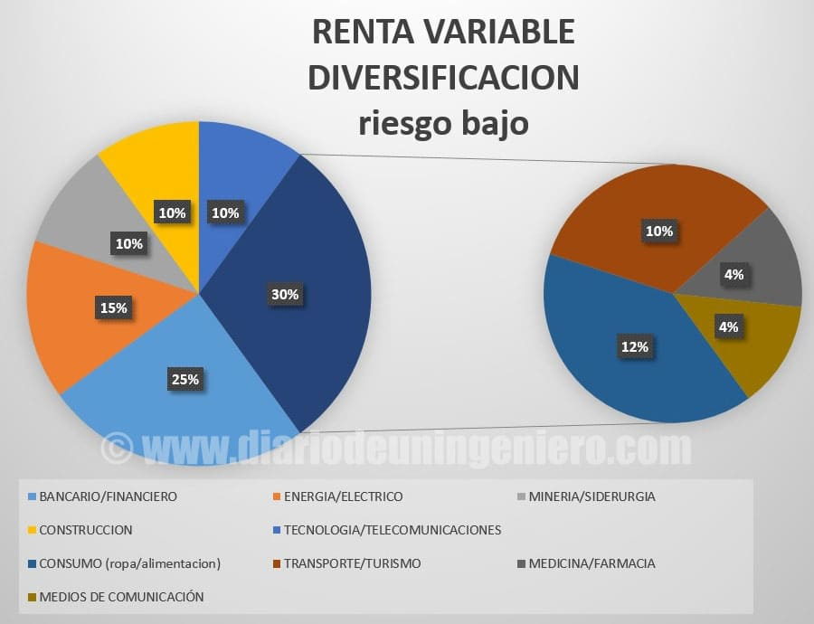

Invertir nuestro capital
Muchos de los que leeréis este hilo seguramente no sepáis nada de bolsa ni de acciones.
Pero quizás si habéis tenido o visto algún familiar con negocios entre manos que haya puesto su dinero en tal tierra o en un comercio.
Lo importante de todo esto siempre es disminuir el riesgo de fracaso lo más bajo que se pueda. Para ello hay que ver cuál es el capital a invertir, demanda y deuda en el caso de que se vaya a pedir un préstamo.
Si se va a recibir un préstamo, lo máximo aconsejable es que el negocio haya empezado a dar los beneficios esperados en un año y que la deuda pueda ser pagada con los beneficios en como mucho 3 años.
Si no se cumplen estas premisas quizás el negocio no valga la pena y sea mejor buscar otras opciones.
Teniendo en cuenta todo esto deberíamos diversificar el capital en diferentes ramas.
En el siguiente gráfico adjunto expongo una diversificación muy conservadora con la mayoría de activos invariables en el tiempo (joyas y bienes (estos pueden variar depende de la compra hecha), y acciones u divisa (deposito)).

-
El depósito bancario es como tener nuestro dinero en una divisa concreta y con un interés anual concreto.
Si estamos en la España, país con riesgo bajo de recesión y corralito, con el euro fuerte el riesgo es muy bajo y si estamos en un banco español con una cantidad inferior a 100.000 euros, sería un riesgo nulo casi.
-
Renta fija o bonos del estado (riesgo muy bajo pero en períodos de tiempo concreto pueden ser alta la rentabilidad (período 2012-2015). Riesgo bajo con potenciales de un 30% y riesgo de pérdidas de un 15%.
-
Renta variable (bolsa, valores), depende de la destreza del inversor. Para mí el riesgo es el menor de todos los aqui mostrados
-
Bienes (vivienda u objetos) depende de cuando compres y en que zona compres en el caso de la vivienda y si son objetos valiosos como cuadros es muy subjetivo pero también hay estrategias.
-
Oro u joyería, si estamos a las puertas de una recesión global puede ser la mejor de las inversiones de todas las expuestas.
En caso de una economía estable, va revalorizándose de acuerdo a la inflación más o menos. Riesgo muy bajo.
En el caso de la bolsa, ocurre algo similar. Las acciones muchas veces puede que no se vayan a rentabilizar rápidamente, pero si hay marcadores técnicos para saber cuándo es momento de entrar evitando riesgos.
Cuando una acción cae mucho, no quiere decir que el rebote vaya a darse de golpe y si bien existe mucha probabilidad de sacar mucho dinero en poco tiempo también de seguir perdiéndolo.
La intención de meter dinero en bolsa no es el de ganar dinero de golpe si no de evitar perderlo a la larga, más si no se entiende de bolsa.
Teniendo esta mentalidad los retornos podrán ser sustanciosos. Para evaluar un valor de bolsa hay dos formas de verlo.
- Desde un punto de vista de la salud de la empresa viendo sus datos económicos, gastos, deuda y beneficio a lo largo del tiempo. Todo esto se llama análisis fundamental.
- Y desde un punto de vista técnico, atendiendo a como se ha comportado la acción a lo largo del tiempo y como ha reaccionado a eventos buenos y malos.
Además del análisis por medias (MACD) y a diferentes indicadores como la acumulación de la acción, numero de órdenes de compra venta diarios, etc.
Pero la clave en bolsa es la distribución del capital, o como se dice la diversificación.
Nunca podemos estar al 100% seguro en bolsa de nada, normalmente el precio al que cotiza es el precio al que en ese momento vale la empresa, contabilizando el precio de todas las acciones.
La mayoría de los casos este precio subjetivo no se corresponde en nada con la realidad y será cosa del inversor en saber si esa empresa está sobrevalorada o infravalorada.
Normalmente el tiempo pone a todas las empresas en su sitio. Muchas veces el valor cotiza por encima de su valor, no porque se espere que vaya a mejorar la empresa si no por razones de ciertos individuos que poseen
gran capital dentro. En el momento que quieran tirar la acción para abajo puede caer y con fuerza por lo que no es bueno tener más de un 10% en un valor en concreto.
Además de no tener todo nuestro capital en una empresa concreta también debemos diversificar y no agrupar las acciones en un sector concreto.
Si baja un mineral y tenemos en mineras lo más normal es que bajen todas unas en mayor o peor medida. Al igual que esto si baja un banco por algún evento macroeconómico serán muchos bancos los que bajen.
Si se hunde un banco o quiebra puede afectar a varios bancos en bastante medida ya que esta todo interconectado. Por eso lo recomendable es distribuir por sectores.
A continuación muestro el ejemplo de cartera que yo recomendaría para minimizar riesgos al máximo.
Esta más bien hecho para la situación actual, si no el sector bancario y financiero debería ser menor, ya que conlleva sus riesgos pero ahora estamos ante el inicio de tipos de interés en la zona euro.
Esto beneficiara a los bancos.

Existen sectores que son cíclicos y se comportan bien en un rango de tiempo y en otro rango empiezan a decaer, es el caso de la minería o siderurgia o el caso bancario.
A continuación hare un repaso del IBEX35, para explicar cómo están diversificados los sectores en los índices.
En la actualidad el nivel del IBEX35 está algo hinchado y deberá corregir aunque es de los que más potencial tienen en el medio plazo.
También es recomendable diversificar por países y divisas, si bien el caso español actualmente no presenta ningún riesgo.
Si bien hay países emergentes con empresas que cuentan con un mayor potencial y se podría tener un 15% de cartera en estos países.
Sectores cíclicos
-
El de la minería o siderurgia empezó a rebotar en 2016 y ha habido retornos cercanos al 100% o 200% en muchas de esas empresas estos dos años.
Ahora se encuentra en una etapa madura, quedan subidas todavía pero el riesgo es más elevado que cuando estaban en mínimos.
En este grupo en el IBEX podemos encontrar acciones como ACERINOX o ARCELORMITTAL, ambas con una tendencia alcista impecable.
Entre estas dos es mucho más robusta ACERINOX, ya que se ha comportado mucho mejor
ante la caída del precio de los metales los años pasados.
Además en ese caso concreto también es debido a que ACERINOX es una empresa que trabaja el metal y no lo vende tal cual, con lo que le da un valor añadido.
Por eso le influye algo menos la caída de los metales.
Por otro lado también encontramos a REPSOL, que ha doblado su valor desde mínimos, si bien aquí hay un riesgo elevado ya que las tensiones geopolíticas entre los productores de la OPEP y Estados Unidos es notable.
Podría ocurrir una caída grande de los precios en cualquier momento por lo que yo no recomiendo entrar en valores como ese.
Empresas que dependen de materias primas tienen un riesgo elevado, ya que fluctúan mucho tanto para bien como para mal.
En el caso actual con un buena entrada por técnico podría ser ventajoso tener no más de un 15% de valor en cartera.
En el campo de la industria petrolera y del gas tenemos a TECNICAS REUNIDAS, que hace 2 años sufrió un ajuste importante debido a no cumplir con las perspectivas.
Esa bajada pudo ser el indicador necesario para volver a mover el valor y ya recupero el valor que tenía anteriormente.
-
El sector bancario también es de tipo cíclico y lleva en fase alcista desde que ocurrió el “crash” de 2008.
Si bien con algunas alteraciones en el tiempo puntuales que hicieron caer la cotización de los mismos como en el caso del Brexit o la crisis en la OPEP de inicios de 2016 que finalmente no fue más que un aviso.
Ahora mismo las cosas pintan muy bien en el sector bancario ya que la política de tipos 0 parece que está llegando a su fin y podríamos ver una política mucho más restrictiva con el dinero en la que los bancos son los principales beneficiados.
Y los más perjudicados aquellas empresas con una alta deuda. Por ello aquí sí que recomendaría entrar hasta con un 30% del valor en cartera.
De todos los bancos del sector español, SANTANDER, BBVA, BANKIA, BSABADELL, CAIXABANK o POPULAR, veo mejor gestión y mejor precio de entrada en BANKIA.
-
Otro sector cíclico interesante es el de la construcción que ahora está empezando a despegar y que se espere un nuevo impulso cuando Trump anuncie su nuevo plan de infraestructuras.
Las empresas más beneficiadas serían aquellas multinacionales con presencia en Estados Unidos como ACS o FERROVIAL.
España cuenta con empresas bastante avanzadas en este campo y muchas estan en momento alcista claro como SACYR que ha dejado de su etapa de rebote de mínimos.
>
Sectores menos cíclicos
-
En este caso tendríamos las empresas de la energía o eléctricas que están en muy buena forma en España porque cuentan con el respaldo del gobierno.
Las subidas son escalonadas y llevan ya varios años en tendencia alcista con unos beneficios constantes y sonantes. Este es el caso de ENDESA, IBERDROLA y GAS NATURAL así como RED ELECTRICA.
Otras empresas eléctricas con una tendencia alcista imparable son GAMESA que a diferencia de las anteriores no ha tenido trato favorable y tiene un buen valor gracias a la gestión de la misma.
GAMESA tuvo que lidiar con la crisis de las renovables tras el gobierno de Zapatero y ha multiplicado su valor exponencialmente hasta hoy, hasta tal punto que se ha fusionado con SIEMENS recientemente.
con el objetivo de ser líder en su campo.
Otra empresa renovable española es ABENGOA que podría ser el caso antagónico a GAMESA. Con una gestión nefasta por parte del equipo directivo han estado a punto de hundir la empresa.
Actualmente la empresa se encuentra liderada por Urquijo y otros directivos de renombre de España que harán lo indecible para recuperar el puesto que se merece.
Esta empresa ha realizado recientemente una dilución del valor de sus acciones, perdiendo los accionistas y acreedores casi el total del dinero invertido.
Ahora mismo, la acción no refleja para nada el valor de la empresa y podría ser un claro signo de entrada en el valor.
Tras la tormenta si bien el riesgo aun en la empresa es elevado, las informaciones que tengo al respecto indican lo contrario.
Si bien hay muchas cosas aún en el aire que puede hacer variar mucho de cuanto estemos hablando por lo que el riesgo es alto.
-
Otro sector no cíclico sería el tecnológico con pocas empresas representativas en bolsa españolas, ya que España nunca ha sido buena en ese campo.
Como exponente tendríamos a INDRA, empresa más bien estatal dependiente del estado. Su valor es más bien lateral y para nada es un valor en el que arriesgar el dinero ya que lo mueven 4 personas con información privilegiada.
Además el riesgo de perder es más que el de ganar, existen multitud de empresas tecnológicas extranjeras con mejores perspectivas y datos más transparentes.
Por otro lado tenemos a TELEFONICA, empresa de telecomunicaciones española de las más grandes del IBEX. Si bien las perspectivas de esta empresa son bajistas a largo plazo.
Cuenta con numerosos problemas financieros y los beneficios han ido disminuyendo con los años según se ha ido acabando el monopolio y el paraguas de la Unión Europea ha ido desapareciendo.
Además la alta deuda de la compañía puede ser un problema que aún está por llegar, con las subidas de tipos que se vienen. Un valor para estar por motivos técnicos y no recomendables en el largo plazo.
Otras empresas más pequeñas con alto potencial como técnico han sido opadas por las grandes como INDRA con lo que en este sector vemos pocas opciones ya que si una empresa destaca no tarda mucho en ser opada o fusionada con otra.
-
En el sector consumo podríamos encontrar a INDITEX y DIA como representantes en España.
INDITEX con una tendencia impecable desde su nacimiento ahora presenta algo de riesgo al ser tan grande y estar tan capitalizada por lo que por muy alcista que sea conlleva su riesgo.
DIA en cambio es bastante joven en bolsa y tiene bastantes buenas perspectivas al precio que se encuentra actualmente.
-
A veces los coches se ven como un sector propio aunque yo lo veo más como una pieza del sector consumo.
En España no contamos con una empresa de automóviles, si bien es cierto que contamos con más factorías y empleos en este sector que en países que son sede de empresas de automóviles.
En cambio yo añado otro sector que muchas veces esta incluido en el consumo como es el sector del turismo y transportes y también el médico y el periodístico.
-
Otro sector interesante es el turístico con grandes perspectivas en empresas. Destaca la cadena de hoteles MELIA y NHHOTELES. Tienen una tendencia alcista impecable y una rentabilidad anual asegurada.
Además del transporte que es vital en el turismo, encontramos compañías como AENA , respaldada por el gobierno que ha triplicado su valor desde que salió a bolsa hace 3 años con una tendencia alcista que parece que no tiene fin.
También encontramos a IAG, antigua IBERIA, aerolínea española y británica con bastantes nubarrones debido al BREXIT que gracias a los bajos precios del petróleo de estos años ha salido muy beneficiada.
-
También está aquí el sector médico y el farmacéutico con GRIFOLS a la cabeza en España con buenas perspectivas a largo plazo.
-
También contamos aquí con el sector de los medios de comunicación con grandes grupos a la cabeza como VOCENTO, PRISA o MEDIASET con unos buenos resultados.
Si bien han tenido que ajustar sus beneficios y hacer un traspaso a la era digital que se viene encima, sacando ingresos del publicitario en internet.
![[Valid RSS]](https://www.feedvalidator.org/images/valid-rss-rogers.png "Validate my RSS feed")